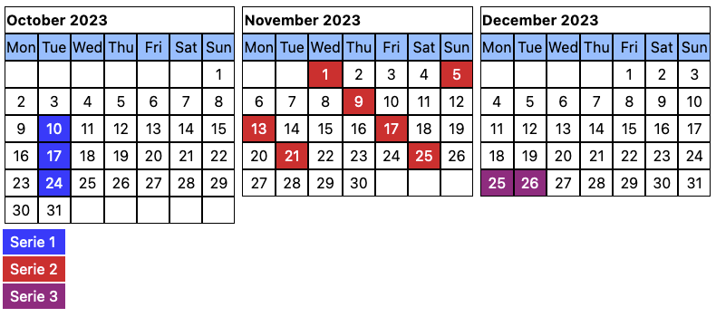

Calendar generator capable of adding recurring markers using the URL query string as input. This solution was created to add calendar view in an easy way to content systems as wikis that support iframe content.
The solution is provided as is. It solves a problem for me and at this moment doesn’t need a lot more flexibility. If you like the solution you’re free to use it (or fork it) and please give it a star ;-).
The code is straigh forward and not created for extensibility. Most magic happens around the handling or markers to highlight dates. It needs one external dependency Luxon that helps with date calculations.
The calendar is available at calendar.html. All configuration is passed via URLs query parameters which are described in this section.
General parameters:
| Parameter | Description | Default | Example |
|---|---|---|---|
start |
Sets the date of the month to start rendering calendars. Must be an ISO parsable date. | now() |
2023-10, 2023-10-02 |
width |
Sets number of calendars rendered horizontally. | 3 |
6 |
length |
Sets the number of months that are renderd. | 1 |
12 |
legend |
Control the display of the legend. | true |
false |
Marker describe which days to highlight. The parameters are:
| Parameter | Description | Default | Example |
|---|---|---|---|
marker |
Marker expression defining which days are highlighted. See marker definition below for details. Mandatory parameter. | 5D, TUE, 1M |
|
first |
Sets the starts of the schedule. Recuring occurences are calculated from this date. Must be ISO parsable. | start from general parameters |
2023-10-09 |
count |
Sets the number of time the schedule repeats. | unlimited |
3 |
name |
Sets the name of the marker. | Serie N |
Any string |
color |
Sets the color in HEX for the marker. The # is omitted. |
00FF00 |
Marker parameters can be included multiple times and will be grouped based on order. It is advided to use the same set of parameters for every marker.
Description of supported schedules for markers. {N} is used as variable.
| Format | Description | Example |
|---|---|---|
LAST |
Shortcut for the last day of the month. | LAST |
{N} |
N is number represting the day of the month. |
2, 28 |
{N}D |
Repeat a mark every N days. |
2D, 33D |
{N}W |
Repeat a mark every N weeks. |
1W, 3W |
{N}M |
Repeat a mark every N months. |
1M, 3M |
MON|TUE|WED|THU|FRI|SAT|SUN |
Specify a week day on which the schedule repeats. | MON, THU |
{N}MON|TUE|WED|THU|FRI|SAT|SUN |
Specify the Nth occurence of a day in a month. | 2TUE, 3FRI |
YYYY-MM-DD |
Specify a date on which a marker should be placed. Must an ISO parsable date. Since dates don’t need configuration like first and count these are best places at the end of query string. |
2023-10-02 |
Render 6 months starting at October 2023, two per row:
Render a recurring marker on every 5 days starting October 3th for 4 times.
Render a recurring marker on Tuesday starting October 10th for 3 times.
calendar.html?start=2023-10&marker=TUE&first=2023-10-10&count=3calendar.html?start=2023-10&marker=1W&first=2023-10-10&count=3
Render a recurring marker every 3rd Thursday of the month
Render two series, every 3rd Monday and last day of the month:
Another mutiple series example: